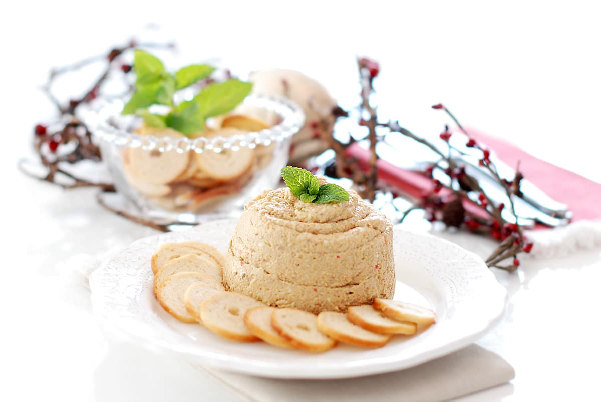
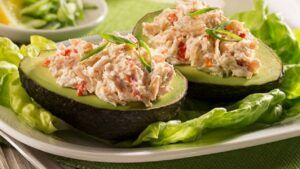
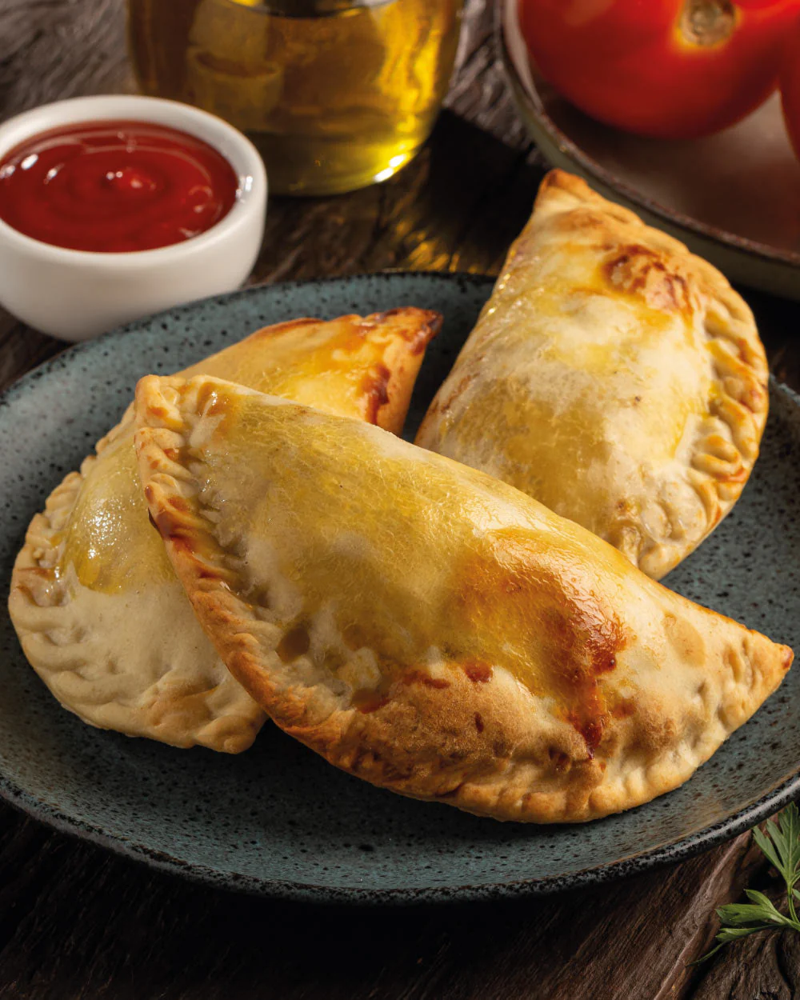
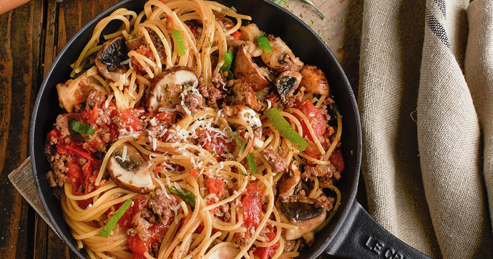
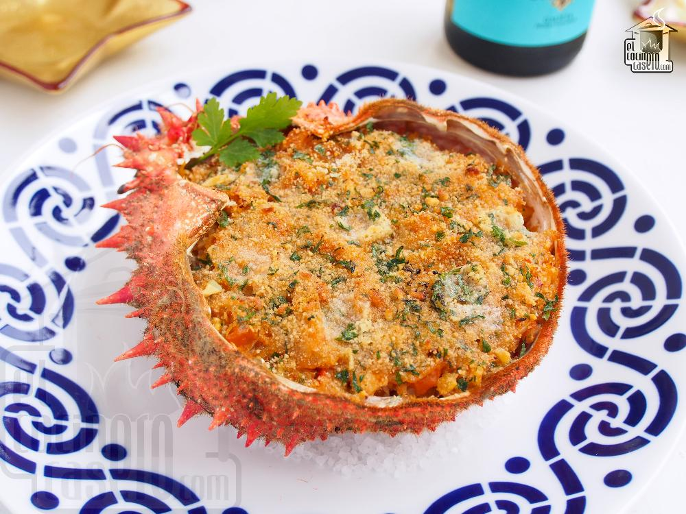
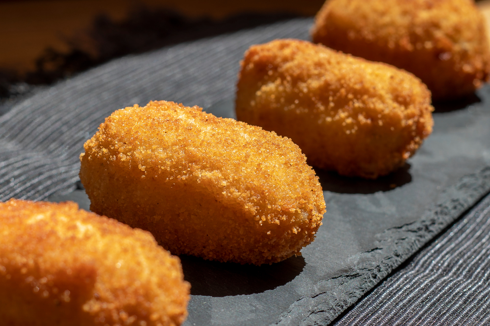
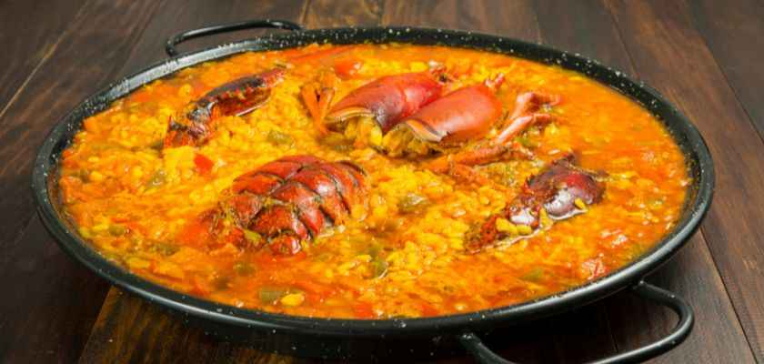
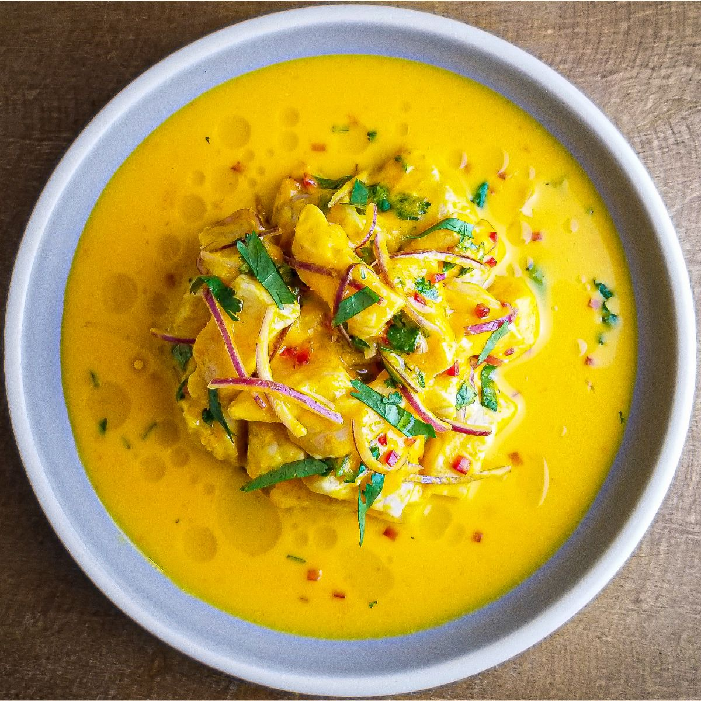

Nuestro Menú

Falsa mousse centollo en cucharitas
Huevos cocidos, palitos de cangrejo, mejillones al natural escurridos, berberechos al natural escurridos, mayonesa, nata para cocinar, sal, cucharitas comestibles.
Crema de centolla con crujiente de pan
Centollas cocidas, Cebollas medianas, Leche entera con calcio, Maicena, Sal, Pimienta negra, Nuez moscada, Aceite de oliva virgen extra, Pan rallado (previamente tostado).

Palta rellena con salpicón de centolla
carne de centolla cocida, cebolla morada cortada en cuadritos, pimiento morrón cortado en cuadritos, apio cortado en cuadritos, cilantro picado, mayonesa, mostaza a la piedra.

Empanadas de chupe de centolla con camarones
ingredientes para el relleno, carne de centolla cocida, camarones desvenados, cortados en trocitos, mantequilla sin sal, cebolla cortada en cuadritos.

Mariscada de crustáceos y centolla rellena
centolla viva de 1 kilo y medio aproximadamente, conchas finas vivas, gambas frescas grandes, limones y medio medianos, ajos muy gruesos, perejil fresco no muy fino.

Spaghetti con carne de centolla
Centollas (hervidas), Spaghetti, Cebollas (en daditos), ajo (en daditos), Concentrado de tomate, Brandy, Estragón, Tomates cherry (partidos por la mitad), Aceite de oliva.

Txangurro a la Donostiarra (Centollo al horno)
Carne de centollo limpia, cebolla picada, puerro blanco, salsa de tomate frito casero, copa de brandy flameado, mantequilla derretida y pan rallado crujiente.

Croquetas cremosas de centollo
Carne de centollo seleccionada, leche fresca de campo, harina tamizada, mantequilla de Soria, cebolleta tierna, huevo batido y pan crujiente panko.

Arroz caldoso de centollo y almejas
plato de cuchara reconfortante, caracterizado por una textura sumamente jugosa, un caldo abundante y ligado, y un profundo e intenso sabor a mar.

Ceviche de centolla al ají amarillo
Carne magra de centolla, leche de tigre base, pasta de ají amarillo, cebolla pluma morada, camote cocido y maíz cancha criollo.